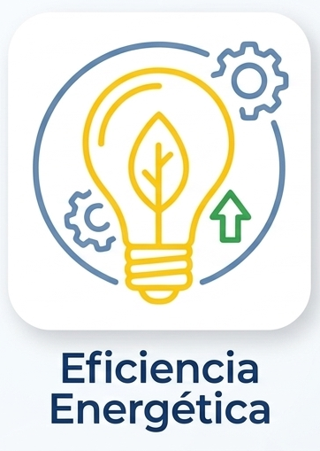
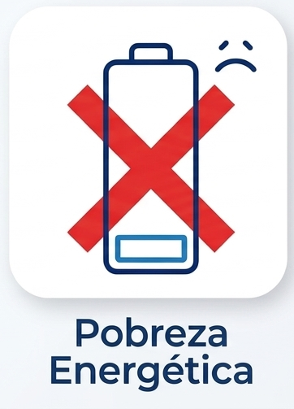
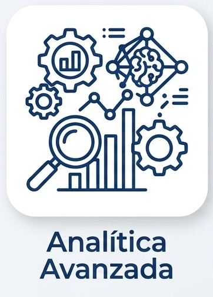
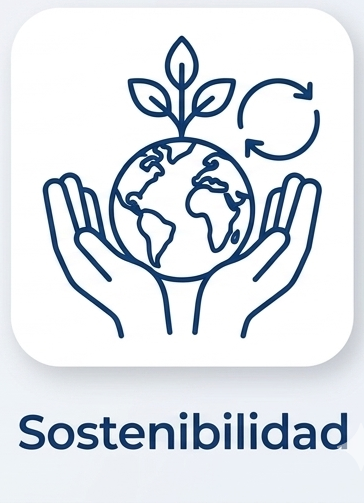

Espacio de Datos EITEL
Este proyecto nace con el objetivo de transformar la gestión energética local a través de la innovación tecnológica y la colaboración intermunicipal. Mediante la creación de un ecosistema de datos robusto, buscamos optimizar la eficiencia energética, promover el uso de energías renovables y fortalecer las políticas de sostenibilidad a largo plazo.
Nuestra misión es empoderar tanto a las instituciones como a la ciudadanía, facilitando una toma de decisiones basada en datos reales para construir municipios más resilientes y sostenibles.
Monitorización y apoyo a hogares vulnerables
Una de nuestras prioridades estratégicas es la lucha contra la pobreza energética. Para ello, se están desplegando sistemas de monitorización en tiempo real mediante sensores en hogares vulnerables.
Esto permite identificar situaciones críticas, optimizar el consumo energético y dirigir recursos de forma más precisa.
Saber más sobre los sensoresObjetivos generales

EFICIENCIA ENERGETICA
Optimizar el consumo energético en hogares y edificios mediante la monitorización de datos de uso, detectando consumos excesivos y fomentando el ahorro. El objetivo es mejorar la eficiencia energética y reducir el gasto tanto a nivel doméstico como municipal.

POBREZA ENERGETICA
Identificar y reducir situaciones de pobreza energética mediante el análisis de datos de consumo y confort en los hogares. Permite detectar vulnerabilidades, priorizar ayudas y mejorar el acceso a una energía asequible y segura para toda la ciudadanía.

ANALITICA AVANZADA
Aplicar técnicas de análisis de datos e inteligencia artificial para comprender el comportamiento energético de los municipios, predecir consumos y apoyar la toma de decisiones basada en información real y en tiempo casi real.

SOSTENIBILIDAD
Promover un modelo energético más sostenible mediante la optimización del consumo, la integración de energías renovables y el uso de predicciones para reducir el impacto ambiental y avanzar hacia ciudades más eficientes y resilientes.